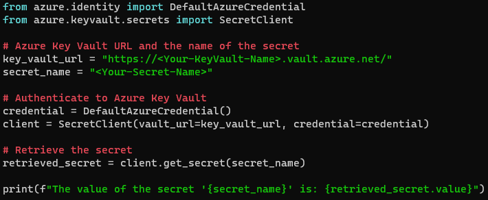

Sometimes tools just simply do not work. 👩💻
The low down
So from the time I started dabbling in the world of hacking, the first thing I noticed is that the plethora of tools available is almost daunting. 🚀
It is easy to feel like a kid in a candy store with all these pentesting/hacking tools at your disposal. From Nmap to Metasploit, the list is endless..
But here's the real tea: a lot of these tools just don't cut it. 🛠️❌ Recently while conducting an external test, I ran to the one of the most widely used password spraying tools around and right as I ran my first command something just didn't feel right.....because, well... the tool wasn't actually doing anything! After diving in I realized that the tool was no longer being maintained and was now dead in the water... Welcome to the ever changing world of pentesting..
I digress...
Let's break it down. We're in an era where new vulnerabilities pop up like whack-a-moles. It's tempting to rely on a pre-built tool to do the job. Easy, right? But here's the catch – not all tools are created equal. Some are outdated, others are as reliable as a chocolate teapot. 🍫☕ So, what’s a cyber sleuth to do? The answer: Get your hands dirty. 🧤💻 Sometimes the tool you need doesn’t exist yet, and that’s your cue to create it. Building your own tools can be a game-changer. It’s not just about having the right hammer; it’s about forging it yourself. 🔨✨ . 🚀
Remember, pentesting isn't just about running tools; it's about understanding the why and the how. It’s about thinking like an attacker and a defender. You need to be agile, creative, and sometimes a bit crafty. 🕵️♂️🛡️and even if you aren't some super high-speed developer, fear not... because we also have something called chatGPT now and you should be leveraging it when possible.:
For example lets take a look at this prompt and the output given by chatGPT
My prompt: ""So I am pen testing a client's web application. The application appears to have an azure key vault secret hard coded into the source code. Give me a script to access the secret key content."
Take a look at the response:👇
We will dive into the weeds of AI and all the chatGPT goodness very soon, the point is that there may be a time when a widely used, respected and familiar tool may fail and then you have to roll up your sleeves and make something happen 👊